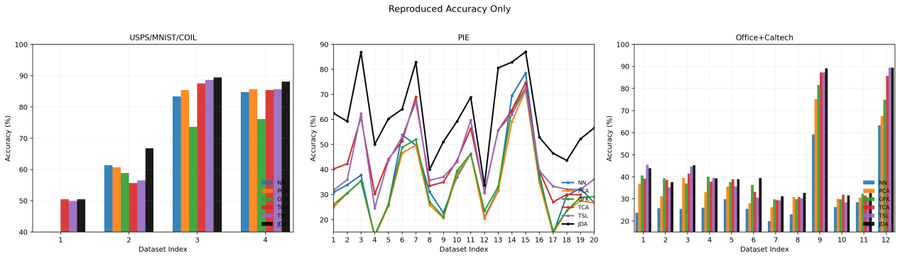
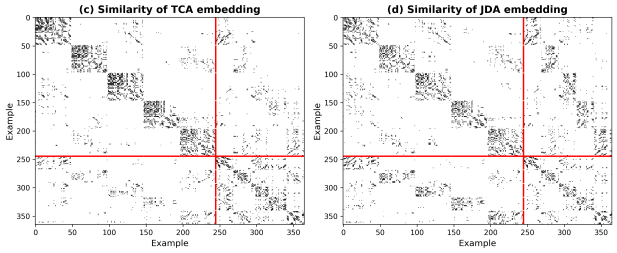
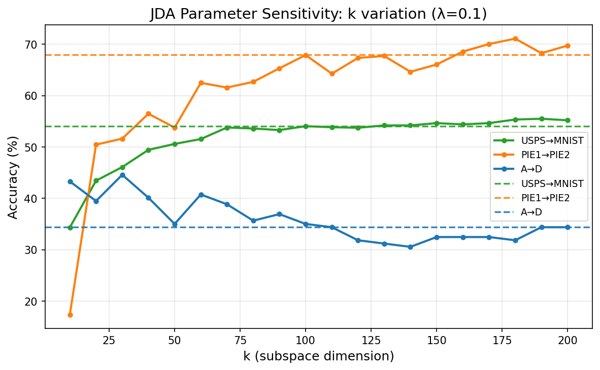
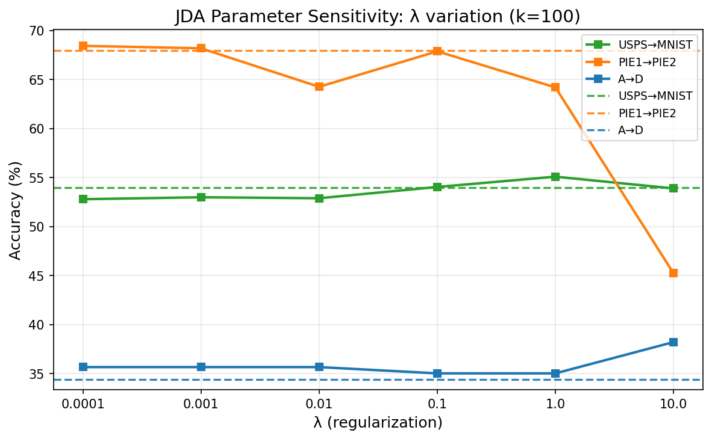
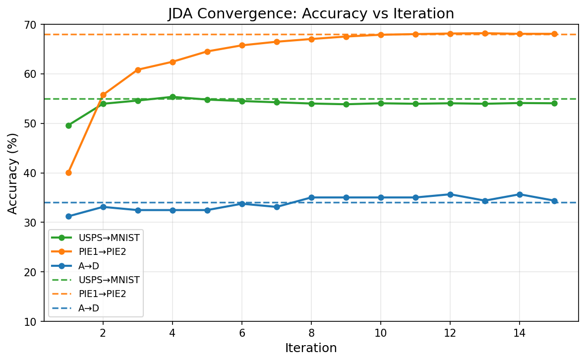
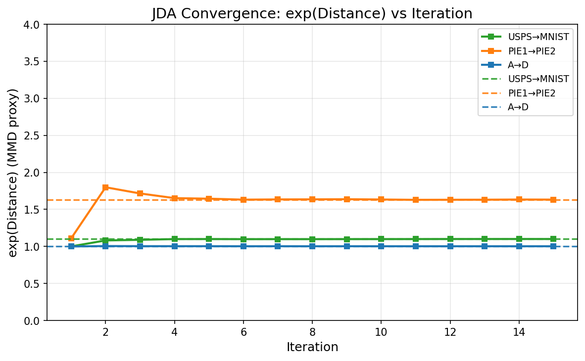

Transfer Feature Learning with Joint Distribution Adaptation
COMP7404 Group16 | Quziqi, He Qing, Lu Zhihua, Liu Zhengyang
若无法播放，请将 Script_JDA_Introduction.mp4 放置于本目录
Domain adaptation aims to learn effective classifiers for target domains with only labeled source data. The key challenge is that source and target domains often have different distributions.
Where M0 is the marginal distribution MMD and Mc (c>0) are conditional distribution MMDs.
Simultaneously adapts both marginal P(Xs) ≈ P(Xt) and conditional P(Y|Xs) ≈ P(Y|Xt) distributions
Uses pseudo-labels to iteratively improve conditional distribution adaptation
Learns optimal projection A such that Z = ATX minimizes domain discrepancy
Outperforms state-of-the-art methods on digit recognition, object classification, and face recognition
JDA iteratively refines pseudo-labels for target domain to improve conditional distribution adaptation
各列格式：Ours (Paper)，即复现结果（论文报告值）。
| Task | Type | NN | PCA | GFK | TCA | TSL | JDA |
|---|
四类数据集（Digit、COIL、PIE、SURF/Office）共 36 个跨域图像任务在各方法下的准确率，体现不同迁移难度下的知识适配表现。

Accuracy (%) on 4 types of 36 cross-domain image datasets
PIE1→PIE2 任务：Accuracy 与 MMD Distance 随迭代次数变化（数据来自 fig4_results.csv）

(c) TCA & (d) JDA Similarity Matrices

(a) k Sensitivity

(b) λ Sensitivity

(c) Accuracy Convergence

(d) Distance Convergence
数据来源：内嵌的 36 个跨域任务结果（论文报告值 Paper + 复现结果 Ours），详见 data.json / _embedded_data.txt。
对比复现 JDA 与论文报告的 JDA 准确率，差值 = Ours − Paper。
| Dataset Type | JDA (Ours) | JDA (Paper) | Difference (Ours − Paper) |
|---|
Title: Transfer Feature Learning with Joint Distribution Adaptation
Authors: Mingsheng Long, Jianmin Wang, Guiguang Ding, Jiaguang Sun, Philip S. Yu
Conference: ICCV 2013
| Total Tasks | 36 |
| Methods | NN, PCA, GFK, TCA, TSL, JDA |
| Avg JDA (Paper) | - |
| Avg JDA (Ours) | - |
| Avg Difference | - |